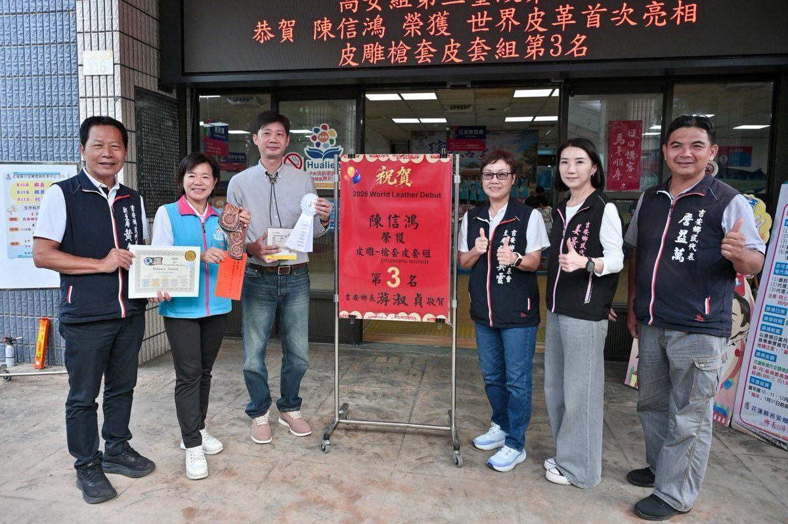

吉安雙星耀國際 何家樂空手道奪牌、陳信鴻皮雕揚名

可樂電子報小編/編輯
吉安鄉長游淑貞昨（27）日於鄉公所，為在全中運空手道高女組第三量級勇奪第3名的何家樂同學，以及榮獲「世界皮革首次亮相皮雕槍套組」第3名的陳信鴻，頒贈紅榜表彰。兩位吉安鄉親在不同領域綻放光芒，印證「讓花蓮看見吉安、讓世界看見花蓮」的驕傲。

何家樂分享，就讀花崗國中時因興趣與同學一同加入學校空手道隊，展開三年紮實訓練；國中畢業進入花女後持續精進。即將升大學前夕奪下這座獎項，她視為送給自己最特別的禮物，也感謝鄉長游淑貞的支持與祝福，讓努力被看見。

陳信鴻則因多年前赴日接觸皮件而萌生熱情，回台自學鑽研。全球皮雕界最高殿堂的「世界皮革首次亮相槍砲組」競賽，他以槍套作品報名參賽一舉獲獎，開心直呼「非常光榮」。為克服台灣民眾不易接觸槍枝的難題，他靈活運用玩具手槍作為塑型工具，以巧思化解限制，展現職人精神。

鄉長游淑貞表示，從皮雕手工藝到全中運空手道，吉安鄉親在多元領域與賽事都有傑出表現，讓吉安發光發亮，也提升花蓮的能見度與世界知名度。鄉公所是鄉親最堅實的後盾，未來將持續整合資源、提供支持，鼓勵更多孩子與在地職人勇於追夢，把興趣變專長、讓專長走向世界舞台。
▶ 延伸觀看
📺 相關報導影片：點此於 YouTube 觀看完整報導